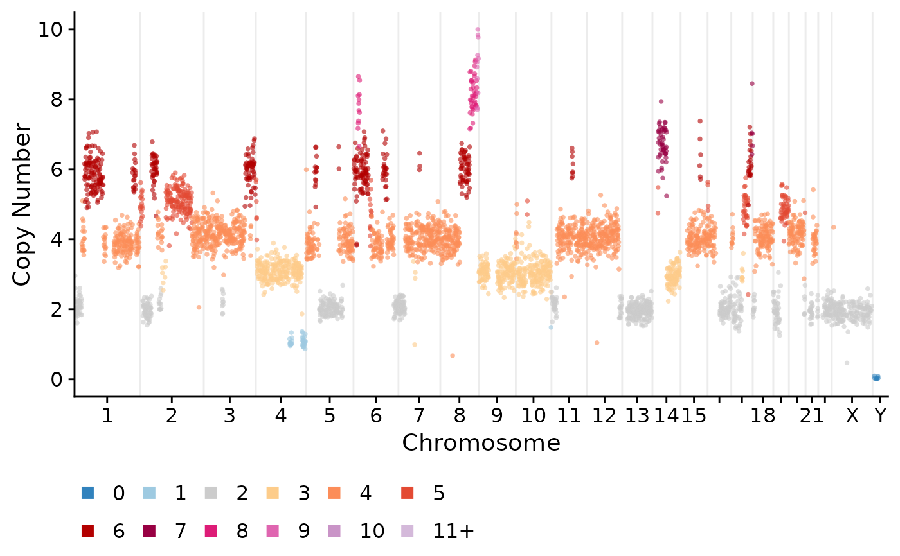

plotCNprofile.RdPlot a single cell copy number profile
plotCNprofile(
CNbins,
cellid = NULL,
chrfilt = NULL,
pointsize = 1,
alphaval = 0.6,
maxCN = 10,
cellidx = 1,
statecol = "state",
returnlist = FALSE,
raster = FALSE,
genome = "hg19",
y_axis_trans = "identity",
xaxis_order = "genome_position",
legend.position = "bottom",
annotateregions = NULL,
annotateregions_linetype = 2,
SV = NULL,
SVcol = TRUE,
svalpha = 0.5,
svwidth = 1,
adj = 0.03,
genes = NULL,
tickwidth = 50,
chrstart = NULL,
chrend = NULL,
shape = 16,
positionticks = FALSE,
ideogram = FALSE,
overwrite_color = NULL,
sv_style = "curves",
sv_arc_alpha = 0.3,
sv_arc_height = 0.2,
show_sv_read_axis = TRUE,
sv_read_axis_scale = NULL,
show_sv_legend = FALSE,
...
)Single cell copy number dataframe with the following columns: cell_id, chr, start, end, state, copy
Which cell to plot, if no cell is specific will plot the first cell in the dataframe
Vector of chromosomes to plot, if NULL (default) will plot all chromosomes
The point size in the plot
Alpha value of points
The maximum on the y axis, if any points are above this value they will be winsorized rather than removed
idx of cell to plot if cellid = NULL
The colour mapping, default is to map colours to the state column
Return a list rather than the ggplot object
use ggrastr or not, default = FALSE
genome to use, default = "hg19" (only used for ideogram)
What transformation to use on the y-axis, default is identity, the other option is "squashy" which uses a tanh transformation
Default is "genome_position"
Where to place the legend, default is "bottom"
Dataframe with chr start and end positions to annotate, will draw a dashed vertical line at this position
linetype for region annotation, default = 2 (dashed)
Default is NULL. If a dataframe with structural variant position is passed it will add rearrangement links between bins. For lines_and_arcs style, SV must include columns: strand_1, strand_2 (values '+' or '-'), and read_count.
Default is TRUE. Colour SVs or not
the alpha scaling of the SV lines, default = 0.5
Width of SV width curves, default = 1.0
adjustment for gene labels
vector of genes to annotate, will add a dashed vertical line and label
Spacing of ticks (in Mb) when only 1 chromosome is plotted
Start of region (in Mb) when plotting a single chromosome
End of region (in Mb) when plotting a single chromosome
shape for plotting, default = 16
set to TRUE to use position ticks rather than chromosome ticks
plot ideogram at the top, default = TRUE
visualization style for structural variants: "curves" (default, bezier curves), "lines_and_arcs" (colored lines with arcs), or "both"
transparency of SV arcs when using lines_and_arcs style, default = 0.3
height of SV arcs as fraction of maxCN when using lines_and_arcs style, default = 0.2
show secondary y-axis for SV read support when using lines_and_arcs style, default = TRUE. Works with both identity and squashy y-axis transformations.
maximum value for SV read support axis (auto-scaled if NULL), default = NULL
show legend for SV orientations when using lines_and_arcs style, default = FALSE
ggplot2 plot
plotCNprofile(CNbins)
#> Making CN profile and BAF plot for cell - SA921-A90554A-R03-C44
#> Making fixed-width bins for bin size 500000 ...
